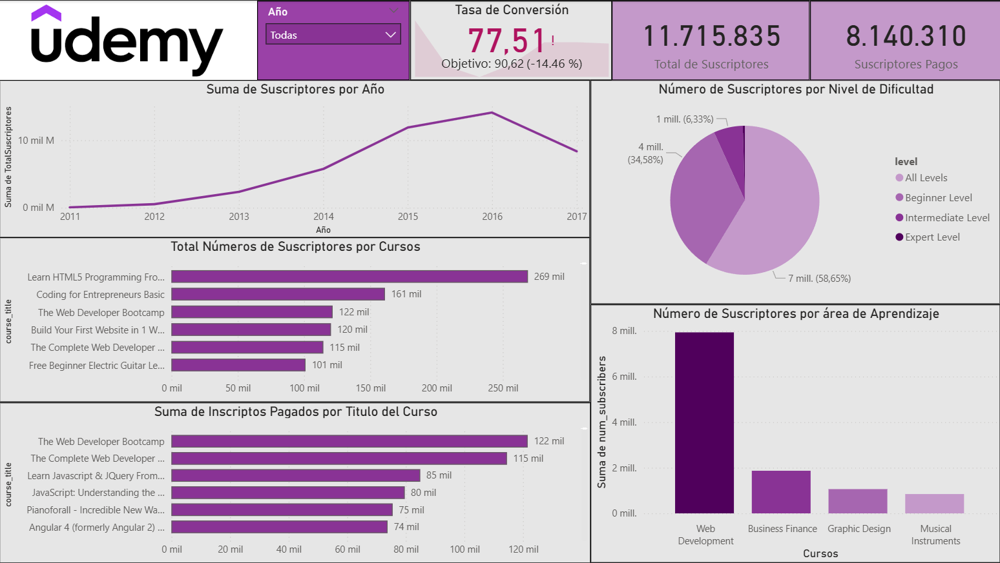

Sobre el Proyecto
Este proyecto analiza datos de plataformas de educación online (MOOCs), destacando Udemy por volumen de información. El análisis exploratorio de datos (EDA) se desarrolló en Python y la visualización final en Power BI presenta métricas clave sobre usuarios, niveles de dificultad, categorías populares y evolución temporal.
Dashboard

Vista del dashboard interactivo construido en Power BI
Principales Hallazgos
Objetivos
- Conversión: usuarios que pasan de cursos gratuitos a pagos.
- Meta: crecimiento anual del 15% en conversiones.
- Período: 2011 a 2017.
Insight clave: En 2014 y 2015 se superó la meta anual. Otros años no alcanzaron el objetivo.
Análisis Exploratorio con Python
Métricas Clave
- Coursera: alto promedio de rating; cursos intensivos y bien valorados por los estudiantes.
- edX: buena relación precio-certificado; enfoque académico con cursos de universidades reconocidas.
- Udemy: accesibilidad priorizada; muchos cursos económicos y gran número de suscriptores.
- Idioma: 68% de los cursos están dictados en inglés.
Recomendaciones
- Potenciar categorías en expansión
- Adaptar precios por región
- Promocionar bundles temáticos
Limpieza y Transformación
- Procesamiento con Pandas
- Detección y tratamiento de valores atípicos
- Análisis de distribución y correlaciones
Tecnologías Utilizadas

Power BI
Visualización interactiva de datos, KPI y filtros dinámicos.
Python (EDA)
Librerías: Pandas NumPy Scikit-learn
Análisis exploratorio, limpieza y comprensión de datos.